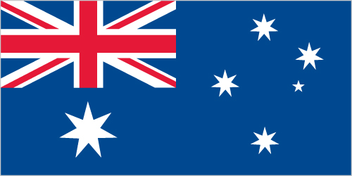

Antarctica :: HEARD ISLAND AND MCDONALD ISLANDS
Introduction :: HEARD ISLAND AND MCDONALD ISLANDS
-
The UK transferred these uninhabited, barren, sub-Antarctic islands to Australia in 1947. Populated by large numbers of seal and bird species, the islands have been designated a nature preserve.
Geography :: HEARD ISLAND AND MCDONALD ISLANDS
-
islands in the Indian Ocean, about two-thirds of the way from Madagascar to Antarctica53 06 S, 72 31 EAntarctic Regiontotal: 412 sq kmland: 412 sq kmwater: 0 sq kmcountry comparison to the world: 203slightly more than two times the size of Washington, DC0 km101.9 kmterritorial sea: 12 nmexclusive fishing zone: 200 nmantarcticHeard Island - 80% ice-covered, bleak and mountainous, dominated by a large massif (Big Ben) and an active volcano (Mawson Peak); McDonald Islands - small and rockymean elevation: NAelevation extremes: lowest point: Indian Ocean 0 mhighest point: Mawson Peak on Big Ben volcano 2,745 mfishagricultural land: 0%arable land 0%; permanent crops 0%; permanent pasture 0%forest: 0%other: 100% (2011 est.)Mawson Peak, an active volcano, is on Heard Islandnone; uninhabited and mostly ice coveredMawson Peak on Heard Island is the highest Australian mountain (at 2,745 meters, it is taller than Mt. Kosciuszko in Australia proper), and one of only two active volcanoes located in Australian territory, the other being McDonald Island; in 1992, McDonald Island broke its dormancy and began erupting; it has erupted several times since, most recently in 2005
People and Society :: HEARD ISLAND AND MCDONALD ISLANDS
-
uninhabited
Government :: HEARD ISLAND AND MCDONALD ISLANDS
-
conventional long form: Territory of Heard Island and McDonald Islandsconventional short form: Heard Island and McDonald Islandsabbreviation: HIMIetymology: named after American Captain John HEARD, who sighted the island on 25 November 1853, and American Captain William McDONALD, who discovered the islands on 4 January 1854territory of Australia; administered from Canberra by the Department of Sustainability, Environment, Water, Population and Communities (Australian Antarctic Division)the laws of Australia, where applicable, applynone (territory of Australia)none (territory of Australia)the flag of Australia is used
Economy :: HEARD ISLAND AND MCDONALD ISLANDS
-
The islands have no indigenous economic activity, but the Australian Government allows limited fishing in the surrounding waters. Visits to Heard Island typically focus on terrestrial and marine research and infrequent private expeditions.
Communications :: HEARD ISLAND AND MCDONALD ISLANDS
-
.hm
Transportation :: HEARD ISLAND AND MCDONALD ISLANDS
-
none; offshore anchorage only
Military and Security :: HEARD ISLAND AND MCDONALD ISLANDS
-
defense is the responsibility of Australia; Australia conducts fisheries patrols
Transnational Issues :: HEARD ISLAND AND MCDONALD ISLANDS
-
none